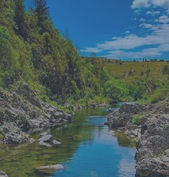
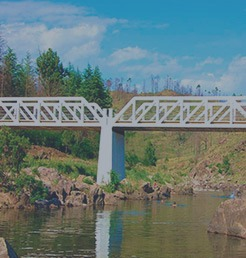
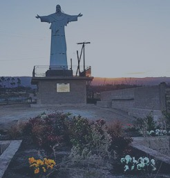

Te sugerimos algunos circuitos autoguiados
para que puedas disfrutar al máximo tu experiencia en bici

El Durazno
Ver recorridoSan Miguel de los Ríos
Ver recorrido

Puente Blanco
Ver recorridoLa Bandera
Ver recorrido

Jesús de los Linderos
Ver recorridoTodos los recorridos sugeridos parten desde la plaza principal del pueblo. Al abrir el recorrido elegido, podés seguirlos desde Google maps y modificar el punto de partida según tu ubicación actual.
Te aconsejamos descargar el mapa para poder usarlo sin conexión. Algunos destinos no cuentan con señal 4G para el celular.
¡No te quedes con ninguna duda y consultanos cuáles son los recorridos recomendados para que tu paseo sea único!